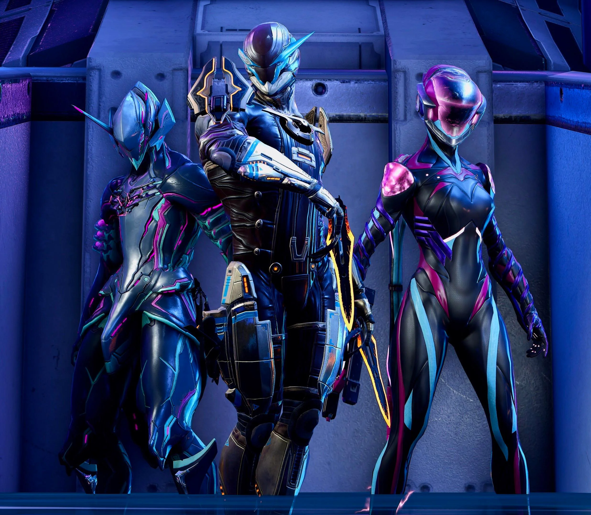

Warframe
So you've decided to help out the Tenno and fight the good fight, but which of the Warframe Warframes is best for you? With all of the choices presented to the player it can be a bit overwhelming to know where to start, after all, the game itself is pretty intimidating to begin with. Some of these are easier to get than others, but all of them will help you become a powerhouse and get to that high-level content faster.
Excalibur is, surprisingly enough, a Warframe based around a sword. It is an incredibly mobile fighter and a perfect choice for a brand-new Tenno, as it is one of the top Warframes. They have a passive ability that boosts their skill with a sword. It increases both their attack speed and damage and lets them dance around the battlefield in a balletic dance of incredibly impressive swordplay. The basic abilities are easy to use, look cool, and are exactly what you want if you like cutting enemies up. You can even choose Excalibur as soon as you start the game, so why wait?
Volt is an electricity-themed Warframe and another of the starter choices. It has one of the coolest passive abilities, one that allows them to build up static electricity as they move around the ground. This, then, adds extra electricity damage to the next attack or ability. They have a good mix of offensive and defensive abilities and a great panic button in the form of Discharge, which hits anything in your vicinity. You might say that Volt is shockingly good, and one of the best Warframe Warframes.
The only female Warframe of the starting trio, Mag's abilities revolve around magnetism, as her name suggests. Mag sacrifices health for stronger shields, and her abilities inflict Magnetic damage, which is in turn deadly to enemy shields. Pull brings enemies closer to Mag, which can be useful for getting into melee range. Magnetize freezes foes in place while also drawing gunfire and other objects towards them. Polarize emits a pulse that strips enemy shields and armor while restoring allies' shields, and Crush creates a field of deadly Magnetic energy. Mag's abilities have powerful synergies between them, too. For instance, Polarize creates shards of metal which can then be attracted to enemies using Magnetize.